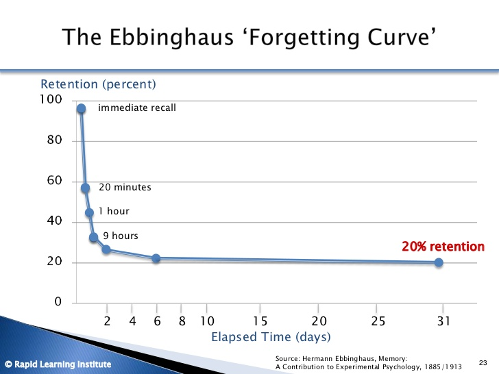
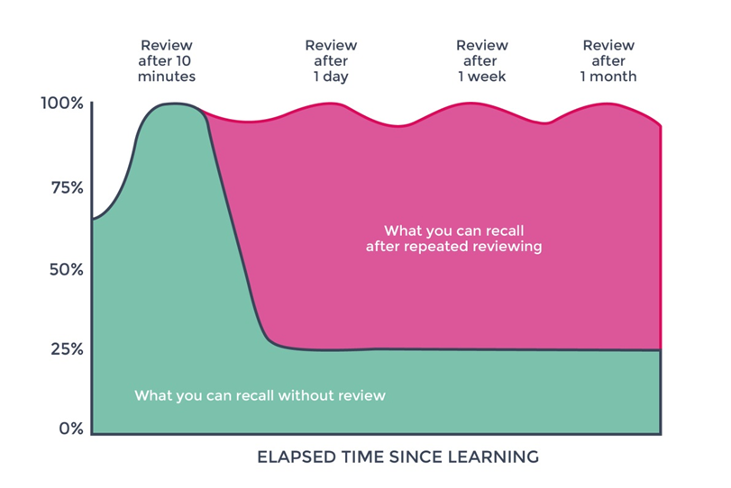

How many times do you forget a formula, Important Key points or images during Exams.
According to Ebbinghaus, YOU forget 58 percent of what You learned in 20 minutes.

You need to revise and review the lessons in frequent intervals to remember better.

It’s not possible to read entire textbook or notes in a short span of time.
So We have removed the pain of collecting and writing down all formulas and important points at one place.
We have collected all Important formulae, Key points, and images from CBSE Class 9 and 10 mathematics and Science and created Formula Handbook for maths and Science.
Features of this Formulae Handbook For Maths and Science:
- Can revise entire Maths / Science content in 20 Minutes
- Quickly revise all formulas
- Revise important points of Each Chapter of maths and Science
- Contains important diagrams of CBSE Class 9 and 10 Science.
- Contains additional Algebraic formulas, Exponents, Areas and volume formulae for better revision.
{kind=link}
{kind=link}
{kind=link}
- Download CBSE Class 10 Formulae Book
- Download CBSE Class 9 Formulae Book
- Download ICSE Class 9 and 10 Formulae Book
WHAT DO STUDENTS SAY ABOUT THIS EBOOK
The information was clear, detailed and useful immediately. — Sruthi
I am very thankful to you…this eBook is very useful to me…it is helping me a lot… –Sushil Kumar
Saved my life very very helpful — Siddharth Singh
and Many more positive feedback from our students.
100% Money Guarantee
Download the eBook today, go through the eBook for 7 days, and if you decide it’s not helping you, email us before the 7th day, and we’ll refund your money.